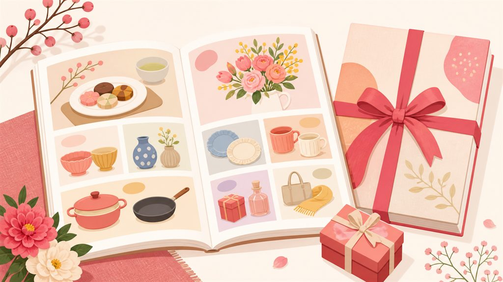

カタログギフトの選び方。
価格帯の仕組みと失礼にならない使い方

相手が好きなものを選べるカタログギフトは、内祝い・香典返しの現代の定番。ただ、値段の仕組みや「失礼にあたらないか」が気になって選びきれない方も多いはず。仕組みから順に整理します。
「システム料」の仕組みを知る
カタログギフトの価格は「商品代＋システム料（800円前後）」でできています。たとえば「3,800円コース」なら、掲載商品の実勢価格はおよそ3,000円。半返しの計算は商品代のほうで考えると、相手が受け取る価値と釣り合います。
| いただいた額 | 半返しの目安 | 選ぶコース（目安） |
|---|---|---|
| 5,000円 | 2,500円 | 2,800〜3,300円コース |
| 10,000円 | 5,000円 | 5,300〜5,800円コース |
| 30,000円 | 10,000〜15,000円 | 10,800〜15,800円コース |
| 50,000円 | 15,000〜25,000円 | 15,800〜25,800円コース |
シーン別の使い分け
- 結婚内祝い・出産内祝い — もっとも一般的な使い方。明るい表紙のシリーズを選び、お礼状を添える
- 香典返し — 弔事用の落ち着いた表紙のシリーズを。挨拶状（忌明けの報告）対応の店だと安心
- お祝いとして贈る — 目上の方へは「金額が分かってしまう」点に注意。体験型・グルメ特化型を選ぶと贈り物らしさが出ます
💡 目上の方への贈り物にカタログギフトを使うのは「手抜き」と受け取る方もいます。気になる相手には、品物＋メッセージカードのほうが無難です。
タイプ別のおすすめ
金額の計算はアプリに任せる
「いただいた額の半分は、どのコース？」——この計算、件数が多いと意外に骨が折れます。アプリ「おくるね」は、いただいた記録から半返し・1/3返しの目安額を自動計算。目安に合わせてコースを選ぶだけになります。